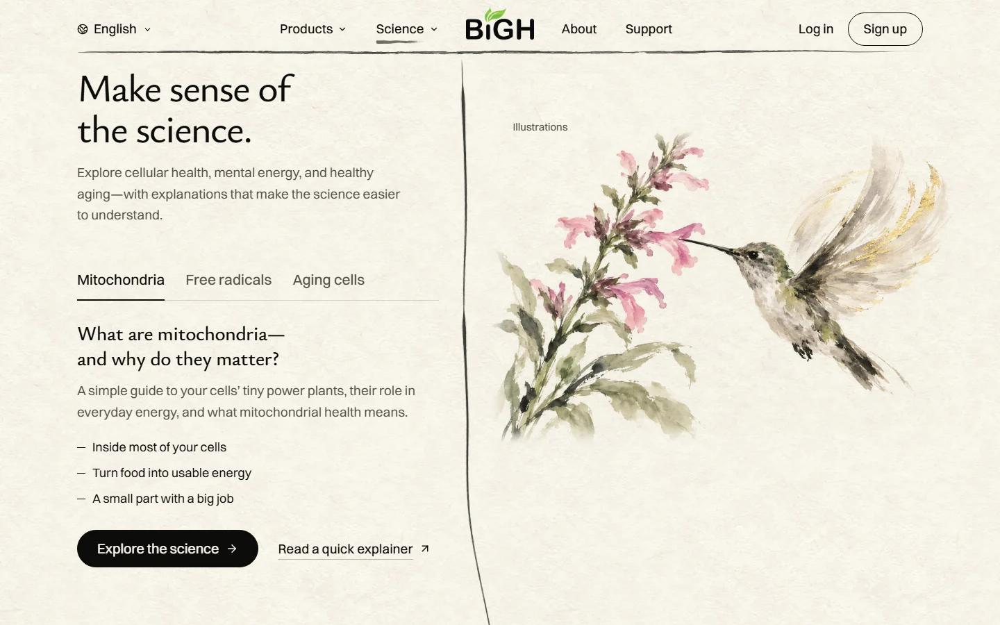
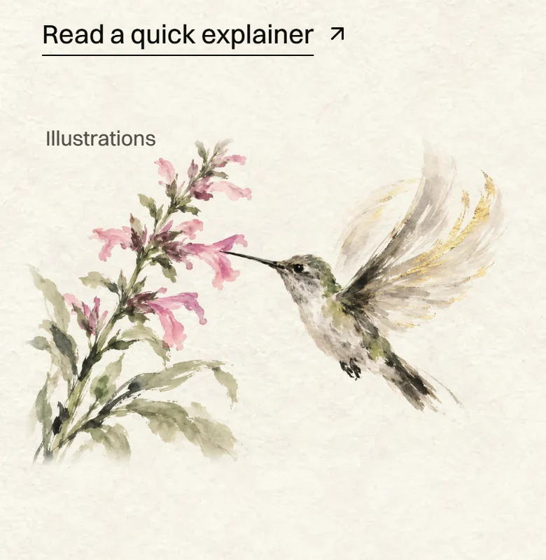
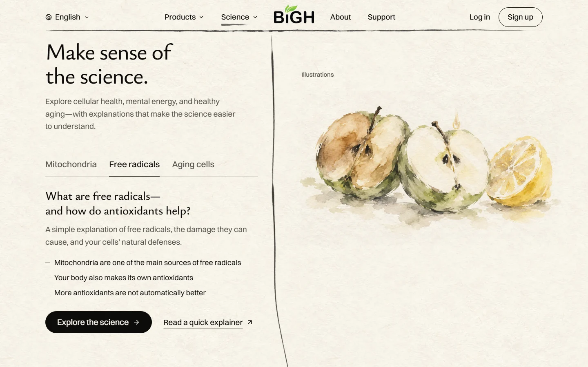
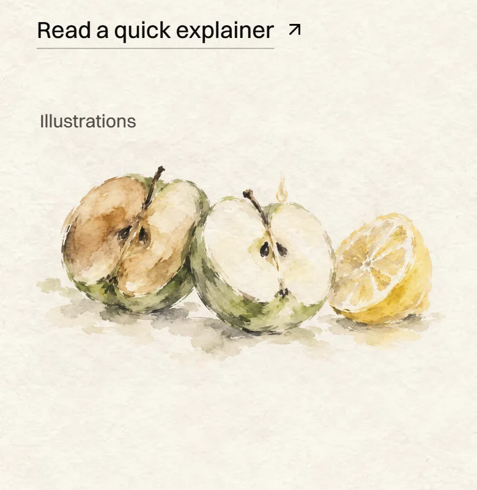
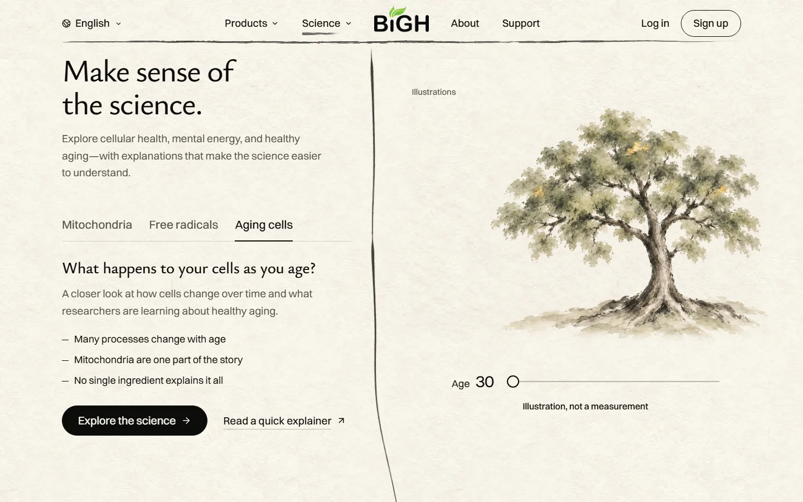
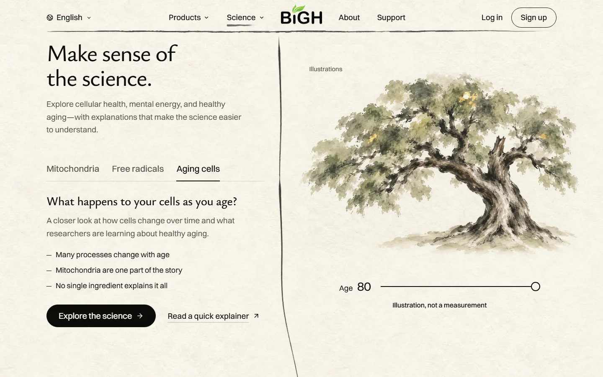
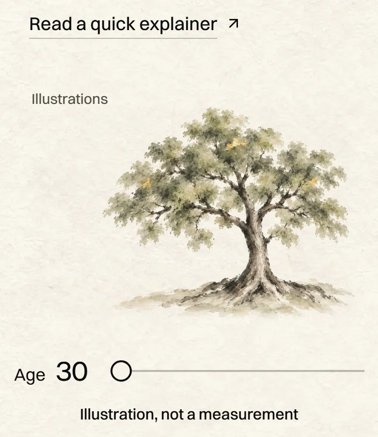
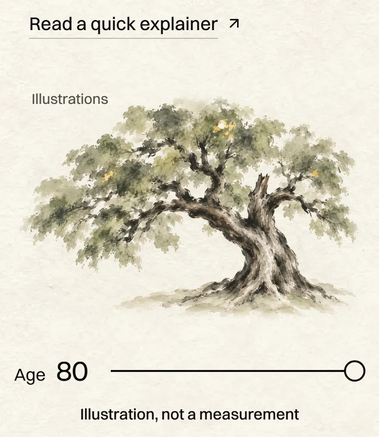

<title>Science Section Paintings</title>
<meta name="claude:viewport-fit-sides" content="cover">
<link rel="preconnect" href="https://fonts.googleapis.com">
<link rel="preconnect" href="https://fonts.gstatic.com" crossorigin>
<link rel="stylesheet" href="https://fonts.googleapis.com/css2?family=Ysabeau:wght@400;500&display=swap">
<style>
  /* Layout: one quiet column like the site itself; each topic is a pair, the laptop view and the phone view. */
  :root {
    --paper: #f5f1e7;
    --ink: #1c1a16;
    --muted: #6b665b;
    --line: #dcd5c4;
    --gold: #9a7424;
    --frame: #ffffff;
    --title: "Ysabeau", "Iowan Old Style", "Palatino Linotype", Georgia, serif;
    --body: system-ui, -apple-system, "Segoe UI", Roboto, sans-serif;
  }
  @media (prefers-color-scheme: dark) {
    :root:not([data-theme="light"]) {
      --paper: #171611;
      --ink: #ece6d6;
      --muted: #a8a191;
      --line: #36332b;
      --gold: #d6ad55;
      --frame: #24221c;
      color-scheme: dark;
    }
  }
  :root[data-theme="dark"] {
    --paper: #171611;
    --ink: #ece6d6;
    --muted: #a8a191;
    --line: #36332b;
    --gold: #d6ad55;
    --frame: #24221c;
    color-scheme: dark;
  }

  body {
    background: var(--paper);
    color: var(--ink);
    font: 17px/1.55 var(--body);
  }
  .page {
    max-width: 1080px;
    margin: 0 auto;
    padding-left: max(16px, env(safe-area-inset-left, 0px));
    padding-right: max(16px, env(safe-area-inset-right, 0px));
    padding-block: 40px 72px;
    display: grid;
    gap: 64px;
  }
  h1, h2 {
    font-family: var(--title);
    font-weight: 500;
    text-wrap: balance;
    margin: 0;
    line-height: 1.12;
  }
  h1 { font-size: clamp(2.2rem, 6vw, 3.4rem); }
  h2 { font-size: clamp(1.6rem, 4vw, 2.2rem); }
  p { margin: 0; max-width: 62ch; }
  .lead { display: grid; gap: 14px; }
  .lead p { color: var(--muted); font-size: 1.1rem; }
  .tag {
    font-size: 0.8rem;
    letter-spacing: 0.08em;
    text-transform: uppercase;
    color: var(--gold);
  }

  .topic { display: grid; gap: 18px; border-top: 1px solid var(--line); padding-top: 28px; }
  .topic header { display: grid; gap: 8px; }
  .topic header p { color: var(--muted); }

  .views {
    display: grid;
    grid-template-columns: minmax(0, 3fr) minmax(0, 1fr);
    gap: 20px;
    align-items: start;
  }
  .views.two { grid-template-columns: minmax(0, 1fr) minmax(0, 1fr); }
  figure { margin: 0; display: grid; gap: 8px; min-width: 0; }
  figure a { display: block; }
  figure img {
    display: block;
    width: 100%;
    height: auto;
    border: 1px solid var(--line);
    border-radius: 6px;
    background: var(--frame);
  }
  figcaption { font-size: 0.85rem; color: var(--muted); }
  a:focus-visible { outline: 2px solid var(--gold); outline-offset: 3px; border-radius: 6px; }

  .stand { display: grid; gap: 16px; border-top: 1px solid var(--line); padding-top: 28px; }
  .score {
    font-family: var(--title);
    font-size: 2.4rem;
    line-height: 1;
  }
  .score small { font-size: 1rem; color: var(--muted); font-family: var(--body); }
  ul { margin: 0; padding-left: 1.2em; display: grid; gap: 8px; max-width: 62ch; }
  .note { font-size: 0.9rem; color: var(--muted); }

  @media (max-width: 720px) {
    .views, .views.two { grid-template-columns: minmax(0, 1fr); }
    .views .phone { max-width: 320px; }
  }
</style>

<main class="page">
  <section class="lead">
    <span class="tag">Homepage · Make sense of the science.</span>
    <h1>Idea A: one painting per topic</h1>
    <p>The mitochondrion now appears only once, in "Tiny power plants." Each tab here gets its own everyday California picture. These are the real homepage with the new paintings swapped in. The words are unchanged. Tap any picture to see it full size.</p>
  </section>

  <section class="topic">
    <header>
      <span class="tag">Tab 1 · Mitochondria</span>
      <h2>A hummingbird at California sage</h2>
      <p>Energy you can see. The gold leaf is in its wings.</p>
    </header>
    <div class="views">
      <figure>
        <a href="img/desktop-energy.webp" target="_blank" rel="noopener"></a>
        <figcaption>Laptop</figcaption>
      </figure>
      <figure class="phone">
        <a href="img/phone-energy.webp" target="_blank" rel="noopener"></a>
        <figcaption>Phone</figcaption>
      </figure>
    </div>
  </section>

  <section class="topic">
    <header>
      <span class="tag">Tab 2 · Free radicals</span>
      <h2>A cut apple and a Meyer lemon</h2>
      <p>One half has browned. The half with lemon juice stays fresh. The gold leaf is on the lemon. It's a comparison, not the same chemistry, and the "Illustrations" label stays.</p>
    </header>
    <div class="views">
      <figure>
        <a href="img/desktop-balance.webp" target="_blank" rel="noopener"></a>
        <figcaption>Laptop</figcaption>
      </figure>
      <figure class="phone">
        <a href="img/phone-balance.webp" target="_blank" rel="noopener"></a>
        <figcaption>Phone</figcaption>
      </figure>
    </div>
  </section>

  <section class="topic">
    <header>
      <span class="tag">Tab 3 · Aging cells</span>
      <h2>A California valley oak that ages with the slider</h2>
      <p>The same tree, on the same spot. At 30 it is young and straight. At 80 it is thick, twisted, missing a limb, and still full of leaves.</p>
    </header>
    <div class="views two">
      <figure>
        <a href="img/desktop-aging-30.webp" target="_blank" rel="noopener"></a>
        <figcaption>Laptop, age 30</figcaption>
      </figure>
      <figure>
        <a href="img/desktop-aging-80.webp" target="_blank" rel="noopener"></a>
        <figcaption>Laptop, age 80</figcaption>
      </figure>
    </div>
    <div class="views two">
      <figure class="phone">
        <a href="img/phone-aging-30.webp" target="_blank" rel="noopener"></a>
        <figcaption>Phone, age 30</figcaption>
      </figure>
      <figure class="phone">
        <a href="img/phone-aging-80.webp" target="_blank" rel="noopener"></a>
        <figcaption>Phone, age 80</figcaption>
      </figure>
    </div>
  </section>

  <section class="stand">
    <span class="tag">My honest score</span>
    <p class="score">8 <small>out of 10, as a direction</small></p>
    <p>The homepage needs 9 before it goes live. What still holds it back:</p>
    <ul>
      <li>The apple looks more like a soft watercolour than brush and ink. I'd paint it again.</li>
      <li>The slider starts at 45. Between the ends, the old tree shows as a faint ghost behind the young one. In the build, it would start at 30 and switch trees quickly in the middle.</li>
      <li>The apple sits high in its frame and leaves empty paper below. I'd tighten that.</li>
    </ul>
    <p class="note">Nothing on the real site has changed. Codex painted these on your ChatGPT plan, with no extra spend.</p>
  </section>
</main>
